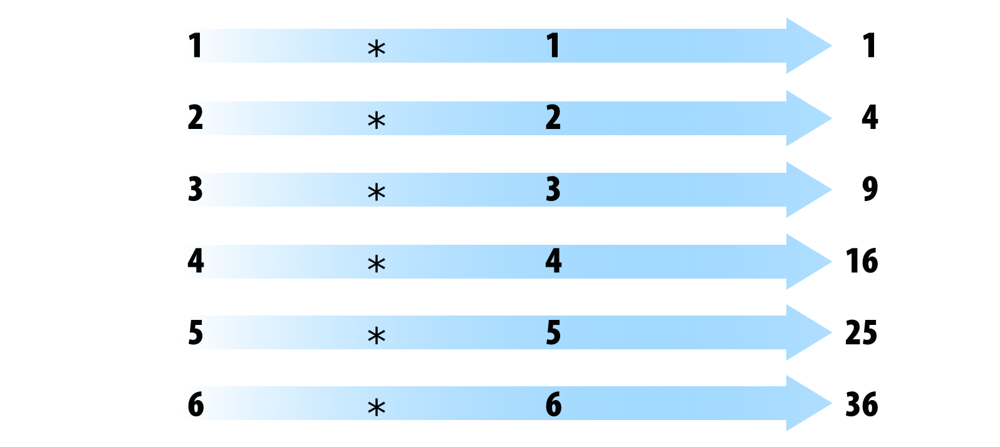
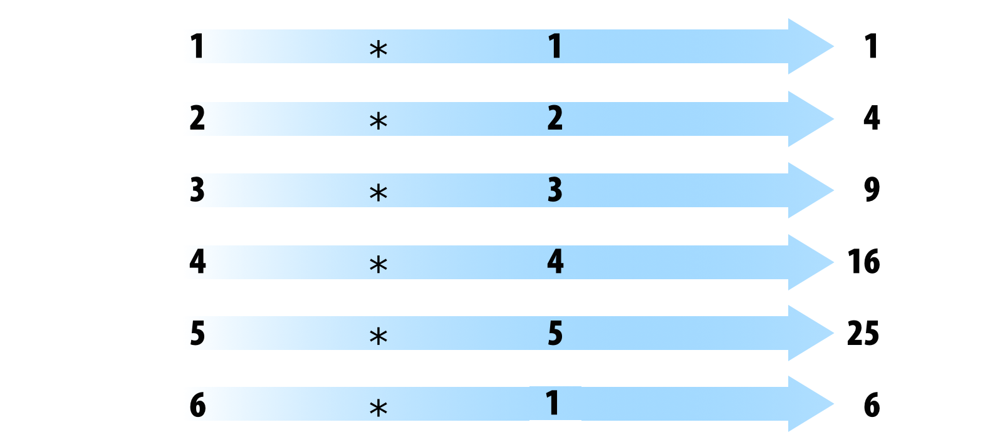

flowchart LR
classDef largeText font-size:18px, padding:15px;
R(Objects in R) --> D(Data objects)
D --> D1(1 dimension)
D --> D2(2 dimensions)
D --> DN(N dimensions)
R --> F(Functions)
D1 --> V(Vector)
D1 --> L(List)
D2 --> M(Matrix)
D2 --> DF(Data Frame)
DN --> AR(Array)
F --> BF(Integraded functions)
BF --> BA(Basic functions)
BF --> OP(Operators)
F --> PF(Packages)
F --> UF(User defined functions)
class R,D,D1,D2,F largeText;
style R fill:#28192F66, stroke:#000, stroke-width:2px, color:#FFF, width:140px
style D fill:#40498E66, stroke:#000, stroke-width:2px, color:#FFF, width:180px
style D1 fill:#348AA666, stroke:#000, stroke-width:2px, color:#FFF, width:140px
style D2 fill:#348AA666, stroke:#000, stroke-width:2px, color:#FFF, width:140px
style DN fill:#348AA666, stroke:#000, stroke-width:2px, color:#FFF, width:140px
style F fill:#357BA266, stroke:#000, stroke-width:2px, color:#FFF, width:120px
style DF fill:#49C1AD66, stroke:#000, stroke-width:2px, color:#000
style AR fill:#49C1AD66, stroke:#000, stroke-width:2px, color:#000
style V fill:#49C1AD66, stroke:#000, stroke-width:2px, color:#000
style M fill:#49C1AD66, stroke:#000, stroke-width:2px, color:#000
style L fill:#49C1AD66, stroke:#000, stroke-width:2px, color:#000
style BF fill:#A0DFB966, stroke:#000, stroke-width:2px, color:#000
style BA fill:#DEF5E566, stroke:#000, stroke-width:2px, color:#000
style OP fill:#DEF5E566, stroke:#000, stroke-width:2px, color:#000
style PF fill:#A0DFB966, stroke:#000, stroke-width:2px, color:#000000
style UF fill:#A0DFB966, stroke:#000, stroke-width:2px, color:#000
Basic elements of the R language
Objective of the manual
To understand the basic blocks used in R programming
To become familiar with the main sources of standardized documentation in R
1 What is R?
- A free Domain-Specific Language (DSL) for statistics and data analysis
- A collection of more than 21313 packages (as of 12-sept-2024)
- A large and active community in industry and academia
- A way to talk “directly” to your computer.
Historically:
- Based on the S programming language
- About 20 years old (lineage dates back to 1975 - almost 40 years ago)

2 Rstudio
Integrated development environment (IDE) for R. Includes:
- A console
- Syntax highlighting editor supporting direct code execution
- Tools for tracing, history, debugging, and workspace management

2.1
3 Elements of the R language
In R everything that exists is an object and objects can be roughly classified into objects that contain data and objects that perform tasks, better known as functions:
To feel comfortable programming in R it is necessary to know at all times what kind of objects we are working with. The class() and str() functions allow us to evaluate the structure of objects. We will be using them repeatedly in this tutorial.
3.1 Objects containing data
The basic data structure in R is the vector. With this all other object classes are built. To understand classes it is useful to think about the number of dimensions (1, 2 or more) and types of data they can contain: homogeneous (a single element type) or heterogeneous (or multiple element types).
flowchart LR
classDef largeText font-size:18px, padding:15px;
D(Data objects) --> D1(1 dimension)
D --> D2(2 dimensions)
D1 --> V(Vector)
D1 --> L(List)
D2 --> M(Matrix)
D2 --> DF(Data Frame)
style D fill:#40498E66, stroke:#000, stroke-width:2px, color:#FFF, width:180px
style D1 fill:#348AA666, stroke:#000, stroke-width:2px, color:#FFF, width:140px
style D2 fill:#348AA666, stroke:#000, stroke-width:2px, color:#FFF, width:140px
style DF fill:#49C1AD66, stroke:#000, stroke-width:2px, color:#000
style V fill:#49C1AD66, stroke:#000, stroke-width:2px, color:#000
style M fill:#49C1AD66, stroke:#000, stroke-width:2px, color:#000
style L fill:#49C1AD66, stroke:#000, stroke-width:2px, color:#000
| Homogeneous | Heterogeneous | |
|---|---|---|
| 1d | Atomic vector | List |
| 2d | Matrix | Data frame |
| nd | Array |
3.1.1 1 dimension objects
There are two basic types of vectors: atomic vectors and lists.
They have three common properties:
- Type,
typeof()(class/mode). - Length,
length()(number of elements) - Attributes,
attributes()(metadata)
They differ in the types of their elements: all elements of an atomic vector must be of the same type, while the elements of a list can have different types.
3.1.1.1 Atomic vectors
Types of atomic vectors:
- Logical (Boolean)
- Integer
- Numeric (double)
- Characters
- Factors
Vectors are constructed with the c() function, they can be numeric:
Code
x <- 1
x1 <- c(1)
all.equal(x, x1)[1] TRUECode
class(x)[1] "numeric"Characters:
Code
y <- "something"
class(y)[1] "character"Logical:
Code
z <- TRUE
class(z)[1] "logical"Or factor:
Code
q <- factor(1)
class(q)[1] "factor"Therefore, the individual numbers or strings are actually vectors of length one:
Code
class(1)[1] "numeric"Code
class("a")[1] "character"Vectors can only contain elements of the same type. Different types of elements will be forced to the most flexible type:
Code
x <- c(1, 2, "a")
x[1] "1" "2" "a"Code
class(x)[1] "character"Missing values are specified with NA, which is a logical vector of length 1. NA will always be interpreted to the correct type if used inside c():
Code
v <- c(10, 11, NA)
class(v)[1] "numeric"Code
v <- c("a", "b", NA)
class(v)[1] "character"3.1.1.2 Factors
Vectors with factors are very similar to character vectors. However, a factor can only contain predefined values, known as levels. Attributes are used to define the levels of the factor.
Factors are built on integer vectors using two attributes:
- “factor” class: makes them behave differently from normal character vectors.
- levels: defines the set of allowed values
Code
x <- factor(c("a", "b", "b", "a"))
x[1] a b b a
Levels: a bCode
levels(x)[1] "a" "b"Code
str(x) Factor w/ 2 levels "a","b": 1 2 2 1The factors look like character vectors, but are actually integers:
Code
x <- factor(c("a", "b", "b", "a"))
c(x)[1] a b b a
Levels: a b3.1.1.3 Lists
Can contain objects of different classes and sizes. Lists are constructed with list():
Code
l <- list("a", 1, FALSE)
l[[1]]
[1] "a"
[[2]]
[1] 1
[[3]]
[1] FALSECode
class(l)[1] "list"Code
str(l)List of 3
$ : chr "a"
$ : num 1
$ : logi FALSEIn fact, they can be seen as drawers where you can put any other type of object:
Code
l <- list(c("a", "b"),
c(1, 2, 3, 4),
c(FALSE, TRUE, FALSE))
l[[1]]
[1] "a" "b"
[[2]]
[1] 1 2 3 4
[[3]]
[1] FALSE TRUE FALSECode
str(l)List of 3
$ : chr [1:2] "a" "b"
$ : num [1:4] 1 2 3 4
$ : logi [1:3] FALSE TRUE FALSE3.1.2 2-dimensional objects
3.1.2.1 Matrices
All elements are of the same type:
Code
m <- matrix(c("a", "b", "c", "d", "e", "f"), nrow = 2)
dim(m)[1] 2 3Code
m [,1] [,2] [,3]
[1,] "a" "c" "e"
[2,] "b" "d" "f" Code
class(m)[1] "matrix" "array" Code
m <- matrix(c("a", "b", "c", "d", "e", 1), nrow = 2)
m [,1] [,2] [,3]
[1,] "a" "c" "e"
[2,] "b" "d" "1" 3.1.2.2 Data Frames
Special case of lists. It can contain elements of different types:
Code
m <-
data.frame(
ID = c("a", "b", "c", "d", "e"),
size = c(1, 2, 3, 4, 5),
observed = c(FALSE, TRUE, FALSE, FALSE, FALSE)
)
dim(m)[1] 5 3Code
m| ID | size | observed |
|---|---|---|
| a | 1 | FALSE |
| b | 2 | TRUE |
| c | 3 | FALSE |
| d | 4 | FALSE |
| e | 5 | FALSE |
Code
class(m)[1] "data.frame"Code
is.data.frame(m)[1] TRUECode
is.list(m)[1] TRUECode
str(m)'data.frame': 5 obs. of 3 variables:
$ ID : chr "a" "b" "c" "d" ...
$ size : num 1 2 3 4 5
$ observed: logi FALSE TRUE FALSE FALSE FALSEBut the vectors must have the same length:
Code
m <-
data.frame(
ID = c("a", "b", "c", "d", "e"),
size = c(1, 2, 3, 4, 5, 6),
observed = c(FALSE, TRUE, FALSE, FALSE, FALSE)
)Error in data.frame(ID = c("a", "b", "c", "d", "e"), size = c(1, 2, 3, : arguments imply differing number of rows: 5, 6
3.2 Exercise 1
Create a numeric vector with 8 elements containing positive and negative numbers.
Create a character vector with the names of the provinces of Costa Rica.
Add to the above point vector an
NACreate a numeric matrix with 3 columns and 3 rows
Create a character matrix with 4 columns and 3 rows
What class of object is ‘iris’ and what are its dimensions (hint:
irisis an object available by default in your environment)?Create a data frame with a numeric column, a character column and a factor column.
3.3 Functions: objects that perform tasks
All functions are created with the function() function and follow the same structure:

* Modified from Grolemund 2014
3.3.1 Integrated functions
3.3.1.1 Basic functions
R comes with many functions that you can use to do sophisticated tasks:
Code
# built in functions
bi <- builtins(internal = FALSE)
length(bi)[1] 1402Some functions come by default with R basic. New functions can be loaded as part of additional packages or even created by the user.
flowchart LR
classDef largeText font-size:18px, padding:15px;
F(Functions) --> BF(Integraded functions)
BF --> OP(Operators)
BF --> BA(Basic functions)
F --> PF(Packages)
F --> UF(User defined functions)
class R,D,D1,D2,F largeText;
style F fill:#357BA266, stroke:#000, stroke-width:2px, color:#FFF, width:120px
style BF fill:#A0DFB966, stroke:#000, stroke-width:2px, color:#000
style BA fill:#DEF5E566, stroke:#000, stroke-width:2px, color:#000
style OP fill:#DEF5E566, stroke:#000, stroke-width:2px, color:#000
style PF fill:#A0DFB966, stroke:#000, stroke-width:2px, color:#000000
style UF fill:#A0DFB966, stroke:#000, stroke-width:2px, color:#000
3.3.1.2 Operators
Operators are functions:
Code
1 + 1[1] 2Code
'+'(1, 1)[1] 2Code
2 * 3[1] 6Code
'*'(2, 3)[1] 63.3.1.2.1 Most used operators
Arithmetic operators:
| Operator | Description |
|---|---|
| + | sum |
| - | subtraction |
| * | multiplication |
| / | division |
| ^ or ** | exponential |
Code
1 - 2[1] -1Code
1 + 2[1] 3Code
2 ^ 2[1] 4Code
2 ** 2[1] 4Code
2:3 %in% 2:4[1] TRUE TRUELogical operators:
| Operator | Description |
|---|---|
| < | lower than |
| <= | lower than or equal to |
| > | higher than |
| >= | higher than or equal to |
| == | exactly the same |
| != | different than |
| !x | Is not x |
| x | y | x O y |
| x & y | x Y y |
| x %in% y | correspondence |
Code
1 < 2 [1] TRUECode
1 > 2 [1] FALSECode
1 <= 2 [1] TRUECode
1 == 2[1] FALSECode
1 != 2[1] TRUECode
1 > 2 [1] FALSECode
5 %in% 1:6[1] TRUECode
5 %in% 1:4[1] FALSE
3.3.2 Vectorization
Most functions are vectorized:
Code
1:6 * 1:6
* Modified from Grolemund & Wickham 2017
[1] 1 4 9 16 25 36Code
1:6 - 1:6[1] 0 0 0 0 0 0R recycles vectors of unequal length:
Code
1:6 * 1:5
* Modified from Grolemund & Wickham 2017
3.3.3 Additional package functions
These are functions that are included in additional packages that can be installed and loaded into R. To be used the package must be installed and loaded, e.g. to use the corTest function of the “psych” package we must first install. The packages are installed from the CRAN (Comprehensive R Archive Network) server with the install.packages() function:
Code
install.packages("psych")… and load the package:
Code
library(psych)Once ‘psych’ is installed and loaded, we can call the corTest function:
Code
corTest(iris$Sepal.Length, iris$Sepal.Width)Call:corTest(x = iris$Sepal.Length, y = iris$Sepal.Width)
Correlation matrix
[1] -0.12
Sample Size
[1] 150
These are the unadjusted probability values.
The probability values adjusted for multiple tests are in the p.adj object.
[1] 0.15
To see confidence intervals of the correlations, print with the short=FALSE optionThe use of external packages is the most useful feature of R since it allows to make use of an almost infinite number of specialized functions in different tasks as well as in very diverse fields of science and industry.
We can explore the packages available for R at the CRAN website (click on the “packages” link).
3.4 Exercise 2
Search for a package you are interested in on CRAN
Install the package and load it
Run the example code of one of its functions
3.5 Object manipulation
3.6 Extracting subsets using indexing
Elements within objects can be called by indexing. To subset a vector simply call the position of the object using square brackets:
Code
x <- c("a", "b", "c", "d", "e", "a")
x[1][1] "a"Code
x[2][1] "b"Code
x[2:3][1] "b" "c"Code
x[c(1,3)][1] "a" "c"
The elements can be removed in the same way:
Code
x[-1][1] "b" "c" "d" "e" "a"Code
x[-c(1,3)][1] "b" "d" "e" "a"
The position of the indices can also be given by a conditional evaluation. For instance, this code selects the elements in x in which the value is “a”:
Code
x[x == "a"][1] "a" "a"Notice that there are two steps in this process. First we create a logical vector in which TRUE means that the condition is met and FALSE that is not:
Code
is_a <- x == "a"
is_a[1] TRUE FALSE FALSE FALSE FALSE TRUE.. and then we use it to subset the data frame:
Code
x[is_a][1] "a" "a"Conditional evaluations can also be used for numeric vectors (e.g. ‘>’, ‘==’) and to subset bidimensional objects based on columns or rows.
Matrices and data frames require 2 indices [row, column]:
Code
m <- matrix(c("a", "b", "c", "d", "e", "f"), nrow = 2)
m[1, ][1] "a" "c" "e"Code
m[, 1][1] "a" "b"Code
m[1, 1][1] "a"Code
m[-1, ][1] "b" "d" "f"Code
m[, -1] [,1] [,2]
[1,] "c" "e"
[2,] "d" "f" Code
m[-1, -1][1] "d" "f"Code
df <- data.frame(
provincia = c("San José", "Guanacaste", "Guanacaste"),
canton = c("Montes de Oca", "Nicoya", "Liberia"),
distrito = c("San Rafael", "Nosara", "Nacascolo")
)
df| provincia | canton | distrito |
|---|---|---|
| San José | Montes de Oca | San Rafael |
| Guanacaste | Nicoya | Nosara |
| Guanacaste | Liberia | Nacascolo |
Code
df[1, ]| provincia | canton | distrito |
|---|---|---|
| San José | Montes de Oca | San Rafael |
Code
df[, 1][1] "San José" "Guanacaste" "Guanacaste"Code
df[1, 1][1] "San José"Code
df[-1, ]| provincia | canton | distrito | |
|---|---|---|---|
| 2 | Guanacaste | Nicoya | Nosara |
| 3 | Guanacaste | Liberia | Nacascolo |
Code
df[, -1]| canton | distrito |
|---|---|
| Montes de Oca | San Rafael |
| Nicoya | Nosara |
| Liberia | Nacascolo |
Code
df[-1, -1]| canton | distrito | |
|---|---|---|
| 2 | Nicoya | Nosara |
| 3 | Liberia | Nacascolo |
Data frames can also be subsetted using the name of the columns:
Code
df[,"provincia"][1] "San José" "Guanacaste" "Guanacaste"Code
df[,c("provincia", "canton")]| provincia | canton |
|---|---|
| San José | Montes de Oca |
| Guanacaste | Nicoya |
| Guanacaste | Liberia |
Code
df$provincia[1] "San José" "Guanacaste" "Guanacaste"
Lists require 1 index between double square brackets [[index]]:
Code
l <- list(c("a", "b"),
c(1, 2, 3),
c(FALSE, TRUE, FALSE, FALSE))
l[[1]][1] "a" "b"Code
l[[3]][1] FALSE TRUE FALSE FALSE
Elements within lists can also be subsets in the same code string:
Code
l[[1]][1:2][1] "a" "b"Code
l[[3]][2][1] TRUE
3.7 Explore objects
The following basic R functions (default) can help us to explore the structure of objects:
Code
str(df)'data.frame': 3 obs. of 3 variables:
$ provincia: chr "San José" "Guanacaste" "Guanacaste"
$ canton : chr "Montes de Oca" "Nicoya" "Liberia"
$ distrito : chr "San Rafael" "Nosara" "Nacascolo"Code
names(df)[1] "provincia" "canton" "distrito" Code
dim(df)[1] 3 3Code
nrow(df)[1] 3Code
ncol(df)[1] 3Code
head(df)| provincia | canton | distrito |
|---|---|---|
| San José | Montes de Oca | San Rafael |
| Guanacaste | Nicoya | Nosara |
| Guanacaste | Liberia | Nacascolo |
Code
tail(df)| provincia | canton | distrito |
|---|---|---|
| San José | Montes de Oca | San Rafael |
| Guanacaste | Nicoya | Nosara |
| Guanacaste | Liberia | Nacascolo |
Code
table(df$provincia)
Guanacaste San José
2 1 Code
class(df)[1] "data.frame"Code
View(df)
3.8 Exercise 3
Use the example data
iristo create a subset of data with only the observations of the speciessetosa.Now create a subset of data containing the observations of both
setosaandversicolor.Also with
iriscreate a subset of data with the observations for whichiris$Sepal.lengthis greater than 6How many observations have a sepal length greater than 6?
4 Style matters
Based on google’s R Style Guide
4.1 File names
File names must end in .R and, of course, be self-explanatory:
- Good: graph_posterior_probability.R
- Bad: graf.R
4.2 Object names
Variables and functions:
- Lowercase
- Use an underscore
- In general, names for variables and verbs for functions.
- Keep names concise and meaningful (not always easy).
- Avoid using names of existing functions of variables
Code
- GOOD: day_one: day_1, mean_weight(),
- BAD: dayone, day1, first_day.of.month
4.3 Syntax
4.3.1 Spaces
- Use spaces around operators and for arguments within a function.
- Always put a space after a comma, and never before (as in normal English).
- Place a space before the left parenthesis, except in a function call.
Code
- GOOD:
a <- rnorm(n = 10, sd = 10, mean = 1)
total <- sum(x[1, ])
- BAD:
a<-rnorm(n=10,sd=10,mean=1)
total <- sum(x[,1])
4.3.1.1 Brackets
- The opening key should never go on its own line.
- The closing brace must always be on its own line.
- You can omit braces when a block consists of only one statement
Code
- GOOD:
if (is.null(ylim)) {
ylim <- c(0, 0.06)
}
if (is.null(ylim))
ylim <- c(0, 0.06)
- BAD:
if (is.null(ylim)) ylim <- c(0, 0.06)
if (is.null(ylim)) {ylim <- c(0, 0.06)}
if (is.null(ylim)) {
ylim <- c(0, 0.06)
}
4.3.1.2 Create objects
- Use <-, instead of =
Code
- GOOD:
x <- 5
- BAD:
x = 5
4.3.1.3 Suggestions to add comments
- Comment your code
- Entire commented lines should begin with # and a space.
- Short comments can be placed after the code preceded by two spaces, #, and then a space.
Code
# Create histogram of frequency of campaigns by pct budget spent.
hist(df$pct.spent,
breaks = "scott", # method for choosing number of buckets
main = "Histogram: individuals per unit of time",
xlab = "Individual count",
ylab = "Frequency")
5 R Documentation
Most R resources are very well documented. So the first source of help you should turn to when writing R code is the R documentation itself. All packages are documented in the same standard way. Familiarizing yourself with the format can simplify things a lot.
5.1 Package documentation

5.2 Reference manuals
Reference manuals are collections of documentation for all the functions of a package (only 1 per package):
5.3 Documentation of functions
All functions (default or loaded packages) must have documentation that follows a standard format:
Code
?mean
help("mean")
This documentation can also be displayed in Rstudio by pressing F1 when the cursor is on the function name.
If you do not remember the function name try apropos():
Code
apropos("mean") [1] ".colMeans" ".rowMeans" "circadian.mean" "circular.mean"
[5] "colMeans" "geometric.mean" "harmonic.mean" "kmeans"
[9] "mean" "mean.Date" "mean.default" "mean.difftime"
[13] "mean.POSIXct" "mean.POSIXlt" "rowMeans" "weighted.mean"
[17] "winsor.mean" "winsor.means"
5.4 Vignettes (vignettes)
Vignettes are illustrative documents or case studies detailing the use of a package (optional, can be several per package).
Vignettes can be called directly from R:
Code
vgn <- browseVignettes() Code
vignette()También deberían aparecer en la página del paquete en CRAN.
5.5 Exercise 4
What does the
cut()function do?What is the
breaksargument used for incut()?Run the first 4 lines of code from the examples provided in the
cut()documentation.How many bullets does the warbleR package have?
References
- Advanced R, H Wickham
- Google’s R Style Guide
- Hands-On Programming with R (Grolemund, 2014)
Session info
R version 4.4.1 (2024-06-14)
Platform: x86_64-pc-linux-gnu
Running under: Ubuntu 22.04.4 LTS
Matrix products: default
BLAS: /usr/lib/x86_64-linux-gnu/blas/libblas.so.3.10.0
LAPACK: /usr/lib/x86_64-linux-gnu/lapack/liblapack.so.3.10.0
locale:
[1] LC_CTYPE=en_US.UTF-8 LC_NUMERIC=C
[3] LC_TIME=es_CR.UTF-8 LC_COLLATE=en_US.UTF-8
[5] LC_MONETARY=es_CR.UTF-8 LC_MESSAGES=en_US.UTF-8
[7] LC_PAPER=es_CR.UTF-8 LC_NAME=C
[9] LC_ADDRESS=C LC_TELEPHONE=C
[11] LC_MEASUREMENT=es_CR.UTF-8 LC_IDENTIFICATION=C
time zone: America/Costa_Rica
tzcode source: system (glibc)
attached base packages:
[1] stats graphics grDevices utils datasets methods base
other attached packages:
[1] psych_2.4.6.26
loaded via a namespace (and not attached):
[1] vctrs_0.6.5 nlme_3.1-165 svglite_2.1.3 cli_3.6.3
[5] knitr_1.48 rlang_1.1.4 xfun_0.48 stringi_1.8.4
[9] highr_0.11 jsonlite_1.8.9 glue_1.8.0 colorspace_2.1-1
[13] htmltools_0.5.8.1 scales_1.3.0 rmarkdown_2.28 grid_4.4.1
[17] evaluate_1.0.0 munsell_0.5.1 kableExtra_1.4.0 fastmap_1.2.0
[21] yaml_2.3.10 lifecycle_1.0.4 stringr_1.5.1 compiler_4.4.1
[25] htmlwidgets_1.6.4 rstudioapi_0.16.0 lattice_0.22-6 systemfonts_1.1.0
[29] digest_0.6.37 viridisLite_0.4.2 R6_2.5.1 parallel_4.4.1
[33] mnormt_2.1.1 magrittr_2.0.3 tools_4.4.1 xml2_1.3.6